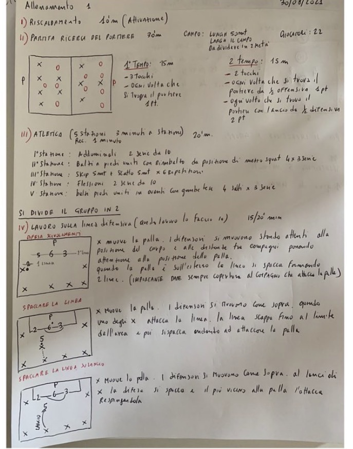

La costruzione della linea difensiva. Dai quaderni dell'allenatore, la progressione della Juniores che ha vinto il campionato provinciale.
Quando si parla di una squadra che non perde mai si pensa subito ai gol fatti. Io sono convinto che la nostra stagione sia nata dalla difesa.
Nella stagione 2021/22 ho allenato la Juniores nome della società. Abbiamo vinto il campionato provinciale senza perdere una partita: N partite, N vittorie, N pareggi e solo N gol subiti.
Non avevamo i giocatori più forti del campionato. Avevamo però una cosa che a questo livello fa la differenza: una linea difensiva che si muoveva come un solo giocatore. Quattro ragazzi che sapevano sempre dove stare, quando uscire e chi doveva coprire chi.
Non è un caso. Abbiamo cominciato a lavorare sulla linea difensiva fin dal primo allenamento del precampionato, il 30 agosto. Mentre metà gruppo faceva gioco di posizione io lavoravo personalmente con la difesa. Gli esercizi che trovi in queste pagine sono proprio quelli.
Una linea difensiva non si costruisce con una lavagna e una spiegazione. I ragazzi devono vivere le situazioni sul campo, una alla volta e sempre nello stesso modo, finché i movimenti diventano automatici.
Per questo le esercitazioni sono in ordine. Si parte dagli scivolamenti, dove la linea impara a muoversi insieme guardando la palla. Poi l'attaccante punta la linea palla al piede e la difesa deve decidere chi esce e chi copre. Infine arriva il lancio, la situazione che a questo livello fa più paura e che porta più gol.
In tutte e tre le esercitazioni torna sempre lo stesso principio, quello che ripetevo di più ai miei difensori: dare sempre copertura al compagno che attacca la palla. Chi esce sulla palla deve sapere che alle sue spalle c'è qualcuno. Se lo sa esce con coraggio. Se non lo sa esita e chi esita arriva tardi.
L'ho pensato per gli allenatori che lavorano dove lavoravo io: Juniores, Allievi e prime squadre dilettantistiche, con poche sedute a settimana e ragazzi che dopo l'allenamento vanno a scuola o al lavoro. Non servono attrezzature particolari: bastano metà campo, qualche pallone e la voglia di ripetere.
Ogni esercitazione ha una pagina con lo schema, l'organizzazione, lo svolgimento e i punti chiave da correggere. Il mio consiglio è di non avere fretta: passa alla progressione successiva solo quando la linea esegue bene quella precedente. Nel nostro precampionato questo lavoro durava 15–20 minuti a seduta.
Questo è il mio calcio, quello che ha funzionato con i miei ragazzi. Prendilo, adattalo alla tua squadra e fallo diventare il tuo.
Le tre esercitazioni sono pensate per essere svolte una dopo l'altra: ognuna parte da quella precedente e aggiunge una situazione nuova. Si lavora con la linea a 4 e il portiere mentre alcuni attaccanti muovono la palla davanti alla difesa. Il lavoro è guidato direttamente dall'allenatore.
Obiettivo: La linea si muove insieme in base alla posizione della palla.
Gli attaccanti muovono la palla. I difensori si spostano curando la posizione del corpo e la distanza tra i compagni, sempre con l'attenzione rivolta alla palla.
Quando la palla arriva sull'esterno la linea si spacca e forma due linee: il difensore più vicino esce sulla palla e gli altri restano dietro.
Obiettivo: Gestire l'attaccante che punta la linea palla al piede.
Gli attaccanti muovono la palla e i difensori si muovono come nella progressione 1.
Quando un attaccante punta la linea palla al piede, la linea scappa fino al limite dell'area. Poi si spacca: un difensore esce ad attaccare la palla, gli altri restano in linea.
Obiettivo: Difendere sul pallone lungo alle spalle o davanti alla linea.
Gli attaccanti muovono la palla e i difensori si muovono come sopra.
Sul lancio la difesa si spacca: il difensore più vicino alla palla la attacca e la respinge, gli altri gli danno copertura.